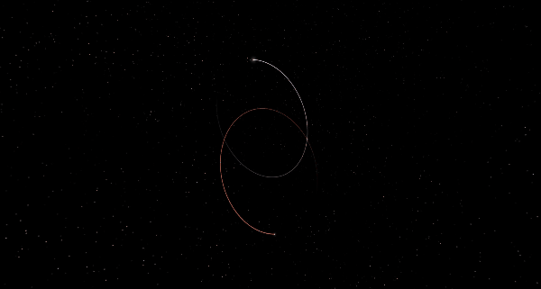

ティーガーデンb、cには生命が存在できる環境が整っているかもしれない。
その理由を今から説明していく。まずこの二つの惑星はティーガーデン星のハビタブルゾーン内を公転している。
ハビタブルゾーンとは、恒星から一定の範囲にある水が液体で存在できる温度を保てる範囲のことである。
もちろん地球も太陽のハビタブルゾーン内に入っている。
しかし先程の通り、二つの惑星の一年は、4.91日と11.9日である。太陽系で太陽に最も近い水星でも88日なため、明らかに水が液体で存在できる
ようには見えない。
しかし主星のティーガーデン星は太陽よりも小さく低温なため、ハビタブルゾーンが恒星に
非常に近い位置にある。
(b、cの昼間は、地球の夕方と同じぐらいの明るさだと予想されている)
その上、二つの惑星は生命に必要な濃い大気を十分に保てる質量を有しているため、少なくともbには液体の水が存在できると予想されている。(ちなみに火星は大気を保てるのに必要な質量が無かったため、極寒の惑星となってしまった)
地球に最も似ている惑星「ティーガーデンb」
二つの惑星以外にも、ハビタブルゾーンに入っている惑星(kepler-1649cやTOI 700dなど)は大量に発見
されているが、その中でもティーガーデンbは最も地球に似ている、今からその理由を具体的に説明していく。
まずティーガーデン星は先程の通り、赤色矮星という恒星の中で最も低スペックな種類に分類されている。一般的に赤色矮星はフレアが非常に活発であるため生命には適してないと考えられている。
フレアとは恒星の爆発現象で、最近だと2021年12月に太陽で巨大なそれが起こった。一方赤色矮星ではそれ以上の威力をもったフレアがほぼ毎日起こっている。もし地球がそれに飲み込まれたら大気や水が
吹き飛ばされ、月や水星のような死の星となってしまう。しかし、ティーガーデン星はフレアが
ほぼ観測されない静かな恒星なため、周りの惑星もその影響をほぼ受けずにいられている可能性がある。

